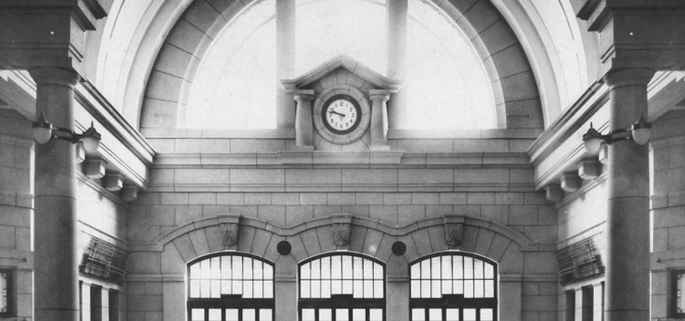

문화역서울284의
지나온 이야기
100년의 역사를 가진 문화역서울284가 지나온 길을 한눈에 살펴보세요. 1900년의 남대문역부터 현재의 문화역서울284까지 역사를 담았습니다.
자세히보기

100년의 역사를 가진 문화역서울284가 지나온 길을 한눈에 살펴보세요. 1900년의 남대문역부터 현재의 문화역서울284까지 역사를 담았습니다.
남대문 정거장이라는 이름의 작은 역에서 르네상스 양식의 서양식 건축물로 발돋움한 경성역은 웅장하고 기품있는 양식으로 주목을 받았습니다. 지금의 문화역서울284로 재탄생한 경성역의 문화와 역사가 공존하는 공간으로 여행을 떠나보세요.
여러 분야의 예술가들이 전시, 마켓, 강연 등 다채로운 프로그램을 기획, 진행하며, 이를 통해 해당공간은 동시대 문화예술 생산의 거점 공간으로 재탄생할 것입니다.
복합문화공간 문화역서울284를 대관합니다. 대안적이고 실험적인 공연, 강연, 연구 등 다양한 프로그램 사업을 추진하고 있습니다. 역사와 문화가 공존하는 문화역서울284에서 예술의 지평을 넓힐 개인 및 공공기관의 많은 참여 바랍니다.